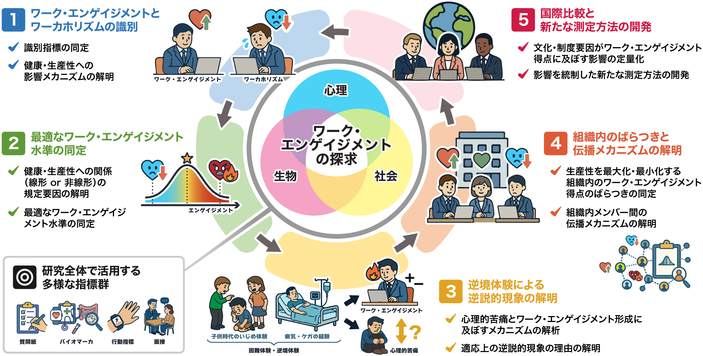
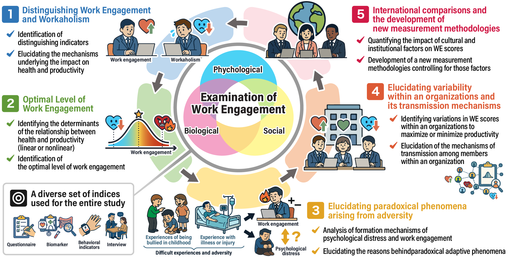

研究概要 OverviewResearch Overview
近年、テクノロジーの進展やグローバル化の深化、そしてパンデミックという未曽有の経験を経て、人々の暮らしと働き方は大きく変化しています。活力や熱意を持って働き成長を実感する人もいれば、ノルマや義務感に追われ過重労働に陥る人、仕事への関与を最小限に留める人もいます。職業生活が人生の多くの時間を占める現代において、働き方の質が人生の質を大きく左右し、個人の幸福、組織の発展、社会の持続可能性に直結します。そのため、働くことの意味や質を問い直すことが、喫緊の課題となっています。
このような文脈で注目されているのが、仕事への主体的・肯定的態度であるワーク・エンゲイジメント（Work Engagement：以下WE）です。WEは、仕事に関連したポジティブで充実した心理状態であり、活力・熱意・没頭の3要素から構成されます。近年では、産業保健、労働・経済政策など多領域で広く認識されています。
本研究では、ワーク・エンゲイジメント（WE：仕事に関連するポジティブで充実した心理状態）に注目し、①ワーカホリズムとの識別、②最適なWE水準の同定、③逆境体験による逆説的現象の解明、④組織内のばらつきと伝播メカニズムの解明、⑤国際比較と新たな測定方法の開発、の5点を目的とします。
大規模パネル調査、健康診断、経験サンプリング調査、面接調査、実験室実験、デジタル機器によるセンシング、フィールド調査を組合わせ、生物－心理－社会にまたがるデータを多角的に検討します。
ポジティブとネガティブ、個人と組織など多様な側面のバランスと調和に着目することでWE研究をさらに進展させ、WE研究の学際化を国際的にリードすることを目指します。
Until now, numerous empirical studies have shown that Work Engagement (WE) leads to better health and higher productivity. Through this process, five points have emerged as new research questions.
In contemporary society, where people's working life accounts for much of their time, the quality of their ways of working greatly determines the quality of their life, leading directly to individual well-being, organizational development, and social sustainability. Re-examining the meaning and quality of work has, therefore, become a pressing issue.
This study focuses on Work Engagement (WE: a positive and fulfilling work-related state of mind), examining differentiation from workaholism, the optimal level of WE, paradoxical phenomena resulting from adverse experiences, variability within organizations and transmission mechanisms, and international comparisons and new measurement methodologies.
Through a multi-methodological approach integrating large-scale panel surveys, medical checkups, experience sampling methods (ESM), interviews, laboratory experiments, digital sensing, and field studies, this study will triangulate data across biological, psychological, and social (biopsychosocial) dimensions.
We will fundamentally reform the evaluation framework for Work Engagement by redefining global perspectives on work through cultural and institutional lenses, providing practical knowledge to modernize labor policies and human resource management.
5つの研究課題Five Key Research Questions


WEとワーカホリズムを識別する指標を同定し、両者が健康・生産性に相反する影響を及ぼすメカニズムを解明します。Identify specific indicators to differentiate WE from workaholism and elucidate the mechanisms underlying their divergent impacts on health and productivity.
WEと健康・生産性の関係（線形または非線形）が、どのような要因で規定されるかを解明します。Determine the factors that define the relationship (linear or non-linear) between WE, health, and productivity.
人生上の困難な経験が、心理的苦痛とWE形成に及ぼすメカニズムを解析し、適応上の逆説的現象の理由を解明します。Clarify how adverse experiences simultaneously influence psychological distress and WE, clarifying the adaptive mechanisms behind this coexistence.
組織内メンバーにおいて、どの程度のWEのばらつきが生産性を最大化・最小化するのか、WEが組織内のメンバー間でどのように伝播するのか、そのメカニズムを解明します。Evaluate how WE heterogeneity among members affects collective productivity and identify the mechanisms of WE contagion within organizations.
文化・制度要因がWE得点に及ぼす影響を定量化し、その影響を統制した新たな測定方法を開発します。Quantify cultural and institutional biases in WE scores to develop standardized measurement methodologies.